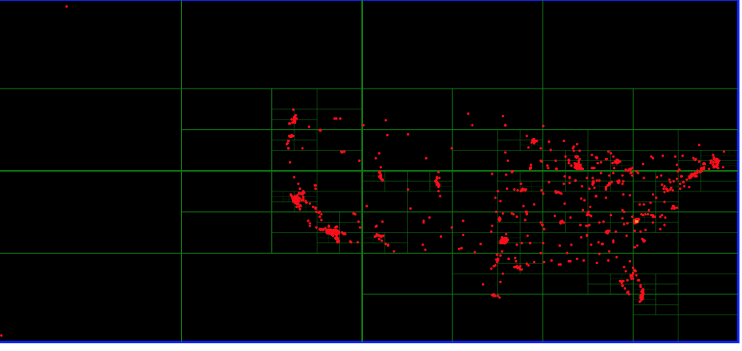
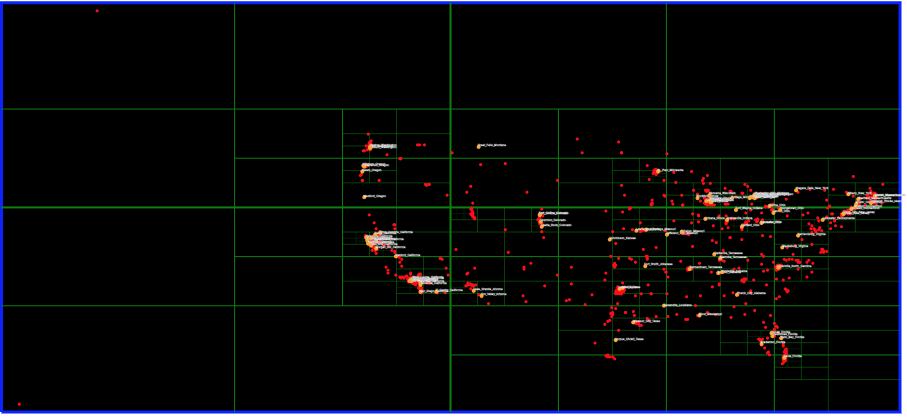

Spatial data structures such as quadtrees and octrees are frequently used in advanced graphics/robotics/games based algorithms and applications for optimizing spatial operations such collision detection, ray intersection with objects/ When the amount of input geometry is large, spatial search structures are typically used. Here we will demonstrate these aspects in a simplified 2D world.
Going through the shape tutorials is a good idea to get familiar with the SymbolCollection class hierarchy and its features
[SymbolCollection Tutorials] (http://bridgesuncc.github.io/tutorials/Symbol_Collection.html)
Read the US city input data with its lat/long locations (for purposes of this assignment you can use this as their 2D locations, although in reality, a conversion to rectangular coordinates would needed). Find the bounding rectangle of these positions and plot the cities.
Similar to binary search tree that searches for keys in 1D, quadtrees are a search structure for points or objects defined in 2D. They are an adaptive search structure, adapting to the distribution of objects in the region, with more partitioning in denser regions so as to optimize the search. The main difference is that we are working in 2D space and searching for geometrically defined entities (points, lines, planar objects, etc). Here we will use a set of randomly generated 2D points to represent our "objects" and search for them in a manner similar to a binary search tree.
Quadtrees partition regions into 4 equal sized quadrants at each step. The patitioning continues only if the new regions have sufficient number of objects, else they become leaf nodes. See the figure below and note the increased partitioning in the lower left quarter of the rectangular region.
Select a subset of cities, get their position and search for them in the quadtree you have built. Similar to a binary search tree, your traversal will follow a path in the tree, but this time you are searching with 2 keys to identify the branch of the quadtree to follow. Once you find the city (a linear search at the leaf node is necessary as the node might contain multiple points depending on the threshold used to stop the tree construction), label it and plot the cities. See the figures below on what you should be expecting.
The first figure shows all of the US cities plotted. The rectangle is much larger, since cities in Alaska and Hawaii are included. The second figure shows a set of 100 cities searched for and labeled. The large orange city is Charlotte, NC!
 
SymbolCollection documentation
SymbolCollection documentation